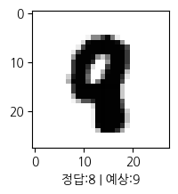

import tensorflow as tf
import numpy as np
import matplotlib.pyplot as plt
from tensorflow.keras.models import Sequential
from tensorflow.keras import layers
from keras.utils import to_categorical
from tensorflow.keras.datasets import mnist스터디 진행하며 진행한 과제 기록(MNIST, Neural Network)
개요
참여중인 딥러닝 스터디 3주차 기록입니다.
- Neural Network로 MNIST다루기
- 강사님이 주신 샘플코드 참고해서, 나에게 맞추거나 추가공부 진행
과제 작성 (NeuralNetwork / NonLinear)
Mnist Dataset로딩 및 전처리
(x_train, y_train), (x_test, y_test) = mnist.load_data()
for i in (x_train, y_train, x_test, y_test):
print(i.shape)(60000, 28, 28)
(60000,)
(10000, 28, 28)
(10000,)# Shape 오류 발생하여 원핫인코딩 수행
# X는 (28, 28)인데 Y는 그냥 정답(5면 5)여서 그런듯 함
# ValueError: Arguments `target` and `output` must have the same rank (ndim). Received: target.shape=(None,), output.shape=(None, 10)
x_train = x_train.reshape((60000, 28, 28, 1))
y_train_one_hot = to_categorical(y_train, num_classes=10)
x_test = x_test.reshape((10000, 28, 28, 1))
y_test_one_hot = to_categorical(y_test, num_classes=10)모델구성
- Codestral에게 MNIST데이터셋에 적합한 파라미터와 레이어로 조정해달라고 하여 맞춤
- 수업 때 거의 ReLU에요라고 들었는데 마지막 빼고는 거의 ReLU가 사용되었음
- Softmax는 주로 마지막 층에 쓰인다고 들은 적이 있는데 여기서도 동일하게 되었음
(추가로 알아볼때도 주로 마지막레이어에 쓰인다는 내용 다수 확인)
# 모델 구성
# Mistral에게 Mnist데이터셋이 적합한 레이어와 파라메터로 구성해달라고 해서 조정
model = Sequential([
layers.Input((28,28,1)),
layers.Conv2D(32, (3,3), padding='same', activation='relu'),
layers.BatchNormalization(),
layers.Conv2D(64, (3,3), padding='same', activation='relu'),
layers.BatchNormalization(),
layers.MaxPooling2D((2,2)),
layers.Dropout(0.25),
layers.Conv2D(128, (3,3), padding='same', activation='relu'),
layers.BatchNormalization(),
layers.MaxPooling2D((2,2)),
layers.Dropout(0.25),
layers.Flatten(),
layers.Dense(256, activation='relu'),
layers.BatchNormalization(),
layers.Dropout(0.5),
layers.Dense(10, activation='softmax')
])
model.compile(optimizer='adam',
loss='binary_crossentropy',
metrics=['accuracy'])
model.summary()Model: "sequential_14"
┏━━━━━━━━━━━━━━━━━━━━━━━━━━━━━━━━━┳━━━━━━━━━━━━━━━━━━━━━━━━┳━━━━━━━━━━━━━━━┓ ┃ Layer (type) ┃ Output Shape ┃ Param # ┃ ┡━━━━━━━━━━━━━━━━━━━━━━━━━━━━━━━━━╇━━━━━━━━━━━━━━━━━━━━━━━━╇━━━━━━━━━━━━━━━┩ │ conv2d_40 (Conv2D) │ (None, 28, 28, 32) │ 320 │ ├─────────────────────────────────┼────────────────────────┼───────────────┤ │ batch_normalization_52 │ (None, 28, 28, 32) │ 128 │ │ (BatchNormalization) │ │ │ ├─────────────────────────────────┼────────────────────────┼───────────────┤ │ conv2d_41 (Conv2D) │ (None, 28, 28, 64) │ 18,496 │ ├─────────────────────────────────┼────────────────────────┼───────────────┤ │ batch_normalization_53 │ (None, 28, 28, 64) │ 256 │ │ (BatchNormalization) │ │ │ ├─────────────────────────────────┼────────────────────────┼───────────────┤ │ max_pooling2d_27 (MaxPooling2D) │ (None, 14, 14, 64) │ 0 │ ├─────────────────────────────────┼────────────────────────┼───────────────┤ │ dropout_39 (Dropout) │ (None, 14, 14, 64) │ 0 │ ├─────────────────────────────────┼────────────────────────┼───────────────┤ │ conv2d_42 (Conv2D) │ (None, 14, 14, 128) │ 73,856 │ ├─────────────────────────────────┼────────────────────────┼───────────────┤ │ batch_normalization_54 │ (None, 14, 14, 128) │ 512 │ │ (BatchNormalization) │ │ │ ├─────────────────────────────────┼────────────────────────┼───────────────┤ │ max_pooling2d_28 (MaxPooling2D) │ (None, 7, 7, 128) │ 0 │ ├─────────────────────────────────┼────────────────────────┼───────────────┤ │ dropout_40 (Dropout) │ (None, 7, 7, 128) │ 0 │ ├─────────────────────────────────┼────────────────────────┼───────────────┤ │ flatten_14 (Flatten) │ (None, 6272) │ 0 │ ├─────────────────────────────────┼────────────────────────┼───────────────┤ │ dense_27 (Dense) │ (None, 256) │ 1,605,888 │ ├─────────────────────────────────┼────────────────────────┼───────────────┤ │ batch_normalization_55 │ (None, 256) │ 1,024 │ │ (BatchNormalization) │ │ │ ├─────────────────────────────────┼────────────────────────┼───────────────┤ │ dropout_41 (Dropout) │ (None, 256) │ 0 │ ├─────────────────────────────────┼────────────────────────┼───────────────┤ │ dense_28 (Dense) │ (None, 10) │ 2,570 │ └─────────────────────────────────┴────────────────────────┴───────────────┘
Total params: 1,703,050 (6.50 MB)
Trainable params: 1,702,090 (6.49 MB)
Non-trainable params: 960 (3.75 KB)
모델학습 및 학습과정 시각화
history = model.fit(x_train, y_train_one_hot, epochs=10, batch_size=64, verbose=0)
history.history{'accuracy': [0.9526000022888184,
0.9849333167076111,
0.9872333407402039,
0.9904000163078308,
0.9906499981880188,
0.9917166829109192,
0.9925500154495239,
0.9933333396911621,
0.9935333132743835,
0.9948333501815796],
'loss': [0.09701579809188843,
0.014779138378798962,
0.01159658282995224,
0.009130637161433697,
0.008214634843170643,
0.007283014710992575,
0.0065074339509010315,
0.005834747105836868,
0.005641818046569824,
0.004907044116407633]}plt.plot(history.history['loss'], label='Train loss')
plt.xlabel('The number of learning')
plt.ylabel('Cost')
plt.legend()
plt.show()
모델평가 및 모델 활용한 예측
- 모델평가
model.evaluate(x_test, y_test_one_hot, verbose=0)[0.003361478913575411, 0.994700014591217]- 예측
y_predict_one_hot = model.predict(x_test)
y_predict = np.argmax(y_predict_one_hot, axis=1)
y_predict313/313 ━━━━━━━━━━━━━━━━━━━━ 3s 10ms/steparray([7, 2, 1, ..., 4, 5, 6], dtype=int64)y_testarray([7, 2, 1, ..., 4, 5, 6], dtype=uint8)[추가] 예측치가 틀린값 추출 후 시각화해보기
- 예측 틀린 값 확인
import pandas as pd
df_answersheet = pd.DataFrame(y_test, columns=['Y_test(정답)'])
df_answersheet['Y_pred(예측)'] = np.argmax(y_predict_one_hot, axis=1)
df_answersheet['비교'] = (df_answersheet['Y_test(정답)'] == df_answersheet['Y_pred(예측)'])
df_answersheet| Y_test(정답) | Y_pred(예측) | 비교 | |
|---|---|---|---|
| 0 | 7 | 7 | True |
| 1 | 2 | 2 | True |
| 2 | 1 | 1 | True |
| 3 | 0 | 0 | True |
| 4 | 4 | 4 | True |
| ... | ... | ... | ... |
| 9995 | 2 | 2 | True |
| 9996 | 3 | 3 | True |
| 9997 | 4 | 4 | True |
| 9998 | 5 | 5 | True |
| 9999 | 6 | 6 | True |
10000 rows × 3 columns
df_answersheet['비교'].value_counts()비교
True 9947
False 53
Name: count, dtype: int64- 예측 틀린 값들의 시각화 및 정답/예측치 비교
idx_false = df_answersheet[df_answersheet['비교'] == False].index
idx_falseIndex([ 445, 449, 947, 1014, 1232, 1242, 1247, 1709, 1878, 1901, 2035, 2070,
2118, 2130, 2135, 2414, 2454, 2597, 2654, 2896, 2939, 2953, 3422, 3520,
3808, 3985, 4027, 4176, 4284, 4571, 4639, 4699, 4740, 4761, 5749, 5955,
6571, 6576, 6597, 6625, 8408, 9009, 9015, 9019, 9587, 9620, 9638, 9642,
9664, 9679, 9692, 9698, 9729],
dtype='int64')import koreanize_matplotlib
# 시각화로 Validation 확인
for i in idx_false.tolist():
plt.figure(figsize=(2,2))
# 결과 확인
plt.xlabel(f"정답:{y_test[i]} | 예상:{y_predict[i]}")
plt.imshow(np.reshape(x_test[i], [28, 28]), cmap=plt.cm.binary)
plt.show()


Copyright © 2024 Kibok Park All rights reserved.